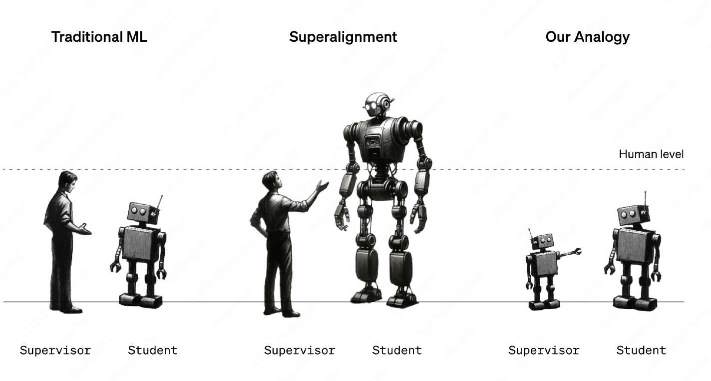
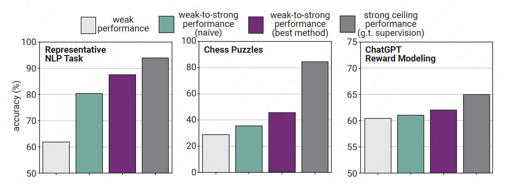
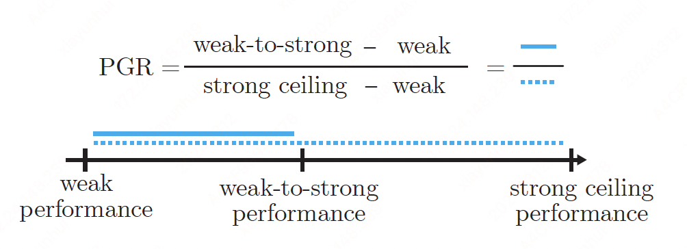

Weak to Strong Generalization#
Note
Widely used alignment techniques, such as reinforcement learning from human
feedback (RLHF), rely on the ability of humans to supervise model behavior. However, future superhuman models will behave in complex ways
too difficult for humans to reliably evaluate; humans will only be able to weakly
supervise superhuman models.
We study an analogy to this problem: can weak
model supervision elicit the full capabilities of a much stronger model? We find that when
we naively finetune strong pretrained models on labels generated by a weak model,
they consistently perform better than their weak supervisors, a phenomenon we
call weak-to-strong generalization.
Introduction#
We mainly steer or align today’s models with reinforcement learning from human feedback (RLHF): we reinforce behaviors that human evaluators rate highly and penalize behaviors that evaluators rate poorly. This procedure is very effective when human evaluators can tell if model behavior is good or bad and is a core part of training modern language model assistants such as ChatGPT.
However, superhuman models will be capable of complex and creative behaviors that humans cannot fully understand. For example, if a superhuman assistant model generates a million lines of extremely complicated code, humans will not be able to provide reliable supervision for key alignmentrelevant tasks. As a result, if we finetune a superhuman model with human supervision on a reward modeling (RM) or safety classification task, it is unclear how that model will generalize to complicated behaviors that humans could not reliably supervise themselves.
This leads to a fundamental technical challenge of aligning superhuman models (superalignment): how can weak supervisors control models much smarter than them?

We propose a simple setup for studying the problem of humans supervising superhuman models by considering an analogy: can we use weak models to supervise strong models? We can empirically test this by finetuning large (strong) pretrained models on labels generated by small (weak) models and observing how they generalize.
Why should weak-to-strong learning be possible? On the one hand, the strong model could simply learn to imitate the weak supervisor, including its errors, since that is what we would naively train it to do. On the other hand, strong pretrained models should already have good representations of the alignment-relevant tasks we care about. For example, if a model can generate complicated code, then it should intuitively also know whether that code faithfully adheres to the user’s instructions. As a result, for the purposes of alignment we do not need the weak supervisor to teach the strong model new capabilities; instead, we simply need the weak supervisor to elicit what the strong model already knows.
We study our weak-to-strong learning setup by finetuning base (i.e. pretrained-only) language models from the GPT-4 family, spanning 7 orders of magnitude of pretraining compute, across three settings: a large set of popular natural language processing (NLP) benchmarks, chess puzzles, and our internal ChatGPT reward modeling dataset.

Our main findings include:
Strong pretrained models naturally generalize beyond their weak supervisors. If we naively finetune strong models with labels generated by weak models, they consistently outperform their weak supervisors. For example, on NLP tasks, if we finetune GPT-4 with labels from a GPT-2-level model, we typically recover about half of the performance gap between the two models.
Naively finetuning on weak supervison is not enough. Despite positive weak-to-strong generalization, there still remains a substantial gap between strong models finetuned with weak supervision and strong models finetuned with ground truth supervision. Our results provide empirical evidence that naive RLHF will likely scale poorly to superhuman models without additional work.
Improving weak-to-strong generalization is tractable. We find that we can improve performance by encouraging strong models to have confident predictions with an auxiliary loss, bootstrapping supervision with intermediate models, and improving model representations with unsupervised finetuning. For example, when supervising GPT-4 with a GPT-2- level model on NLP tasks using the auxiliary confidence loss, we typically recover nearly 80% of the performance gap between the weak and strong models.
Methodology#
For a given task of interest, consisting of a dataset and a performance metric, we:
Create the weak supervisor.
Train a strong student model with weak supervision.
Train a strong model with ground truth labels as a ceiling.
Typically, weak-to-strong performance will be between weak performance and strong ceiling performance. We define the performance gap recovered (PGR) as a function of the above three performances (weak, weak-to-strong, and strong ceiling) as shown in the illustration below.

Advantages. Our setup has a number of advantages, including:
It can be studied with any pair of weak and strong models, making it easy to study scaling laws and not requiring access to expensive state-of-the-art models.
It can be studied for any task of interest, making it easy to empirically test across a wide range of settings.
Success will be practically useful even before we develop superhuman models.
Limitations. Our setup still has important disanalogies to the ultimate problem of aligning superhuman models:
Imitation saliency (模仿显著性). Future superhuman models will likely have salient representations of human behaviors, but our strong models may not have learned features relevant for imitating weak model predictions; simply imitating the weak supervisor may thus be an easier failure mode to avoid in our setting than it will be in the future. More generally, the types of errors weak models make today may be different from the types of errors humans will make when attempting to supervise superhuman models.
Pretraining leakage. Our pretraining data implicitly contains supervision from humans.